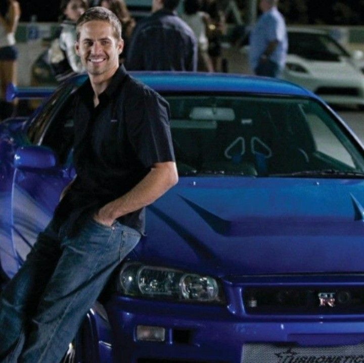

Our Members
.jpg)
Eaint Yadi Oo
Morado Year-7

Yue Hnin Ya Thaw
Morado Year-7

Aung Bhone Khant
Morado Year-7

Wutthmone Phyo
Morado Year-7

Ye'Yint Bhone Pyae
Morado Year-7
Click to see more information of Wutthome Phyo
Vintage is a very beautiful and interesting style from the past. In this project, I searched some information and pictures about vintage because I am really interested in this topic.
Click to see more information about Eaint Yadi Oo
I'm interested in the vintage vibe, so i researched additional information and facts to learn more about it.
Click to see more information about Yue Hnin Ya Thaw
I'm Yue Hnin Ya Thaw, I helped my group members create this webpage.
Click to see more information about Aung Bhone Khant
I like old thing from the past. Old things that i like most is quality the clothes that used in the past are good quality but we can get those quality back.
Click to see more information about Ye'Yint Bhone Pyae
I am interested in vintage because the styles of the past give me comfort and I also like the old past high quality and representative of the past era.